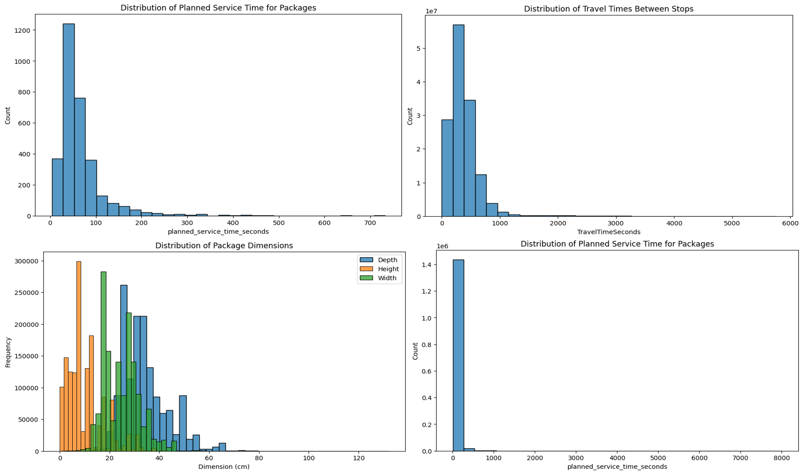
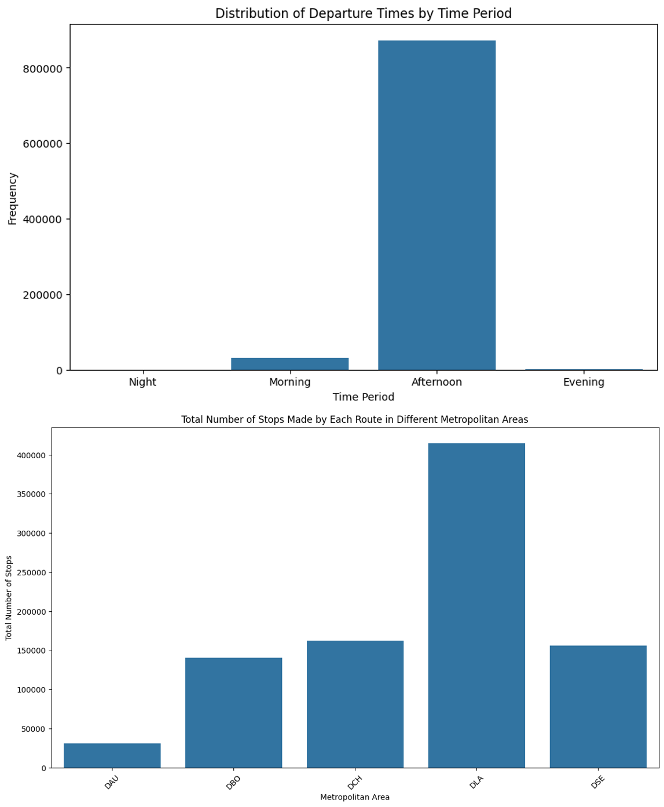
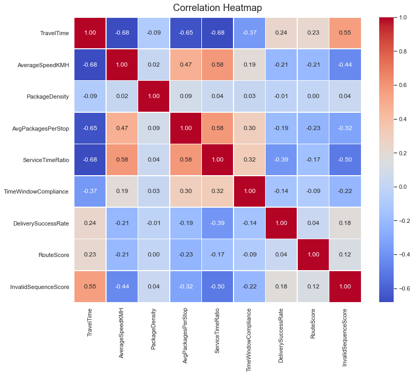
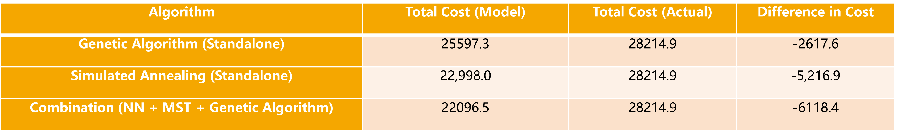
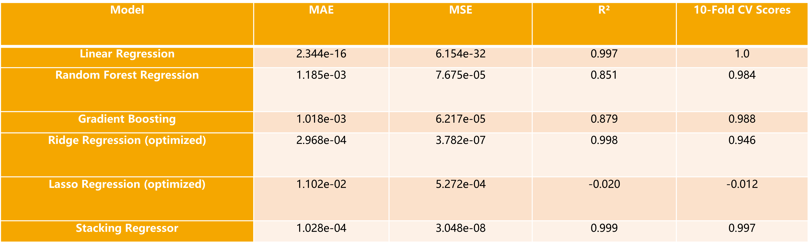
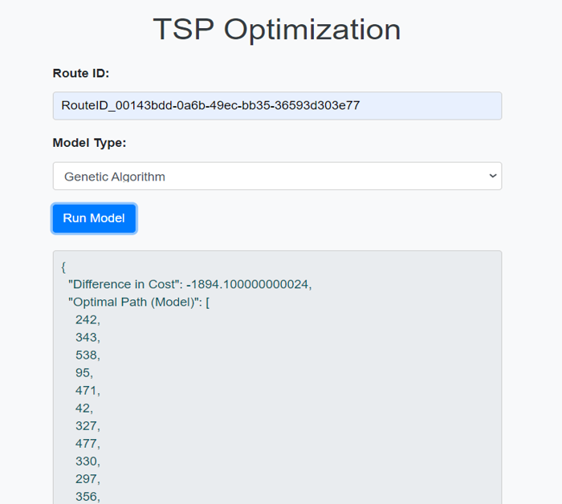
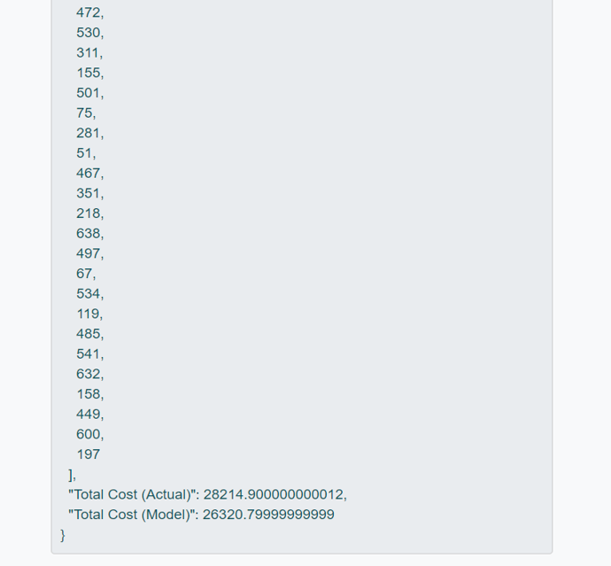

Project Overview
This project focuses on optimizing logistics routes to improve efficiency and reduce costs. The optimization was performed using genetic algorithms and simulated annealing on real-world logistics data.
Data Processing and Feature Engineering
The dataset includes historical logistics data, such as package dimensions, travel times, and route information. Data cleaning and feature engineering were conducted to derive metrics like package density and service time ratio, crucial for building robust predictive models.
Below is a snippet of the code used for data processing and feature engineering.
# Load logistics data
import pandas as pd
# Read the dataset
data = pd.read_csv('logistics_data.csv')
# Feature engineering: calculate cost per distance ratio
data['cost_per_distance'] = data['cost'] / data['distance']
# Handle missing values and clean data
data = data.dropna()
# Example of basic feature processing
print(data.head())
View SQL Data Populating Code
View SQL Data Processing Code
Exploratory Data Analysis (EDA)
Distribution of Features
 The distribution analysis shows that most travel times are concentrated in shorter intervals, indicating compact logistics routes with short distances between stops.
Correlation Heatmap
The correlation heatmap helped identify key features like package density and stop frequency, guiding the selection of relevant variables for the optimization models.
Modeling
Various machine learning models were trained to predict package delivery success rates, including Linear Regression, Random Forest, and Gradient Boosting. Advanced algorithms like Genetic Algorithms, Simulated Annealing, and a combination of Neural Networks with graph-based algorithms were used to solve the Traveling Salesman Problem (TSP) for route optimization.
The following optimization algorithms were applied to improve logistics efficiency:
- Genetic Algorithm
- Simulated Annealing
- Neural Network Graph Theory Hybrid Models
Model Evaluation and Results
Model Evaluation Metrics
 The Random Forest and Gradient Boosting models performed well, but the Stacking Regressor achieved the best results, emphasizing the importance of model selection. The combined approach of Neural Networks, MST, and Genetic Algorithms in route optimization significantly reduced total travel costs.
Final Software Output
Optimized Route Results
 The final software results demonstrate the practical application of these models, showing clear cost differences when compared to actual routes, providing logistics companies with effective tools for route optimization.
Skills Demonstrated
This project involved:
- Collaboration with cross-functional teams to understand logistics requirements.
- Data handling using SQL and Python libraries like Pandas for preprocessing and feature engineering.
- Application of optimization algorithms to improve logistics route efficiency.